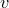

By default, PyXPlot automatically scales axes to some sensible range which contains all of the plotted data. However, it is possible for the user to override this and set his own range. This can be done directly from the plot command, by following the word plot with the syntax [minimum:maximum].1 The first specified range applies to the x-axis, and the second to the y-axis.2 In the following example, the first three cylindrical Bessel functions are plotted in the range  :
:
plot [0:10][-0.5:1] besselJ(0,x), besselJ(1,x), besselJ(2,x)
Any of the values can be omitted, as in the following plot of three Legendre polynomials:
set key xcentre plot [-1:1][:] legendreP(2,x), legendreP(4,x), legendreP(6,x)
Here, we have used the set key command to specify that the plot’s legend should be horizontally aligned in the centre of the plot, to complement the symmetry of the Legendre polynomials. This command will be described more fully in Section 1.6.
Alternatively, ranges can be set before the plot statement, using the set xrange command, as in the examples:
set xrange [-2:2] set yrange [a:b]
If an asterisk is supplied in place of either of the limits in this command, then any limit which had previously been set is switched off, and the axis returns to its default autoscaling behaviour:
set xrange [-2:*]
A similar effect may be obtained using the set autoscale command, which takes a list of the axes to which it is to apply. Both the upper and lower limits of these axes are set to scale automatically. If no list is supplied, then the command is applied to all axes.
set autoscale x y set autoscale
The range supplied to the set xrange can be followed by the word reverse to indicate that the axis should run from right-to-left, or from top-to-bottom. In practice, this is of limited use when an explicit range is specified, as the following two commands are equivalent:
set xrange [-2:2] reverse set xrange [2:-2] noreverse
However, this is useful when axes are set to autoscale:
set xrange [*:*] reverse
Axes can be set to have logarithmic scales by using the set logscale command, which also takes a list of axes to which it should apply. Its converse is set nologscale:
set logscale set nologscale y x x2
Further discussion of the configuration of axes can be found in Section 1.7.
A diagram of the trajectories of projectiles fired with different initial velocities.
In this example we produce a diagram of the trajectories of projectiles fired by a cannon at the origin with different initial velocities  and different angles of inclination
where is the horizontal displacement of the projectile and the vertical displacement. Eliminating from these equation gives the expression |
||||||||||||||||
In the script below, we plot this function for five different values of and |
||||||||||||||||
g = 9.81 # Acceleration due to gravity |
||||||||||||||||
# The mathematical equation of a trajectory |
||||||||||||||||
# Plot configuration |
||||||||||||||||
The resulting plot is shown below: |
||||||||||||||||

|
||||||||||||||||
In the next chapter, we will meet various ways in which this script could be improved. Here, we have used to numerical constants, g being the acceleration due to gravity, and d2r being a factor for converting angles between degrees and radians. The former is, in fact, already defined within PyXPlot as a numerical constant, and the latter conversion can be made using PyXPlot’s automatic ability to convert numbers between different physical units. |
Footnotes
 . According to the equations of motion under constant acceleration, the distance of such a projectile from the origin after time is given by
. According to the equations of motion under constant acceleration, the distance of such a projectile from the origin after time is given by 


 rm m$"
rm m$"